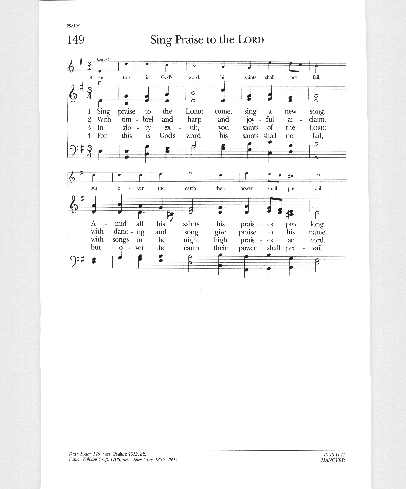

|
|
【歌唱讚美主】 |
|
1 O praise ye the Lord, and sing a new song, 2 With timbrel and harp and joyful acclaim, 3 In glory exult, ye saints of the Lord; 4 For this is his word: his saints shall not fail,
|
歌唱讚美主，唱一首新歌， |
|
https://hymnary.org/hymn/PsH/page/214
 |
|
|
|
|

| Text: | Sing Praise to the LORD |
| Tune: | HANOVER |
| Composer: | William Croft |
| Composer (desc.): | Alan Gray, 1855-1935 |
| Media: | MIDI file |
| Short Name: | William Croft |
| Full Name: | Croft, William, 1678-1727 |
| Birth Year: | 1678 |
| Death Year: | 1727 |
Notes
Scripture
References:
st. 1 = Ps. 148:1-6
st. 2 = Ps. 148:11-14
st. 3 = Ps. 150:3-6
Originally "O Praise Ye the Lord," this text is considered to be one of finest written by Henry W. Baker (PHH 342). It was published in the 1875 edition of Hymns Ancient and Modern (Baker was editor of both the 1861 and 1875 editions).
The entire text is an amplification in hymn form of the "alleluia" phrases that frame Psalm 148 and 150. While stanzas 1-3 are based on various verses in those psalms, stanza 4 is a summary: "For love in creation, for heaven restored, for grace of salvation, sing praise to the Lord!"
Liturgical Use:
Any occasion of praise when Psalm 148 or 150 could also be used; a
glorious (although long) doxology for harvest thanksgiving; a choral
festival or similar praise service.
--Psalter Hymnal Handbook, 1987
William Croft,

Mus. Doc. was born in the year 1677 and received his musical education in the Chapel Royal, under Dr. Blow. In 1700 he was admitted a Gentleman Extraordinary of the Chapel Boyd; and in 1707, upon the decease of Jeremiah Clarke, he was appointed joint organist with his mentor, Dr. Blow. In 1709 he was elected organist of Westminster Abbey. This amiable man and excellent musician died in 1727, in the fiftieth year of his age. A very large number of Dr. Croft's compositions remain still in manuscript.
Cathedral chants of the XVI, XVII & XVIII centuries, ed. by Edward F. Rimbault, London: D. Almaine & Co., 1844
Notes
William Croft (b. Nether Ettington, Warwickshire, England, 1678; d. Bath, Somerset, England, 1727) was a boy chorister in the Chapel Royal in London and then an organist at St. Anne's, Soho. Later he became organist, composer, and master of the children of the Chapel Royal, and eventually organist at Westminster Abbey. His duties at the Chapel Royal were expanded in 1715 to include teaching boys reading, writing, and arithmetic, as well as composition and organ playing. Croft published a two-volume collection of his church music, Musica sacra (1724), in one score rather than in separate part books, and in his preface encouraged others to do likewise. He contributed psalm tunes to The Divine Companion (1707) and to the Supplement to the New Version of Psalms by Dr. Brady and Mr. Tate (1708), which included HANOVER. These tunes mark a new development in English psalm tunes. HANOVER was printed anonymously, but William Croft is generally credited with its composition. The name derives from the House of Hanover, the family of King George III.
HANOVER is a well-crafted tune, distinguished in part by its triple meter, which was still rare in hymn tunes in the early eighteenth century. Like the music of its immediate neighbors, Psalms 148 and 150, which also begin and end with hallelujahs, HANOVER calls for the full resources of voices and organ and other instruments. It should be sung in harmony throughout–or try harmony on the first three stanzas and unison voices and the descant on the final stanza to provide a strong conclusion to this powerful psalm.
--Psalter Hymnal Handbook, 1988
| Text: | O praise ye the Lord! |
| Author: | H. W. Baker, 1821-77 |
| Short Name: | H. W. Baker |
| Full Name: | Baker, H. W. (Henry Williams), 1821-1877 |
| Birth Year: | 1821 |
| Death Year: | 1877 |
Baker, Sir Henry Williams,

Bart., eldest son of Admiral Sir Henry Loraine Baker, born in London, May 27, 1821, and educated at Trinity College, Cambridge, where he graduated, B.A. 1844, M.A. 1847. Taking Holy Orders in 1844, he became, in 1851, Vicar of Monkland, Herefordshire. This benefice he held to his death, on Monday, Feb. 12, 1877. He succeeded to the Baronetcy in 1851. Sir Henry's name is intimately associated with hymnody. One of his earliest compositions was the very beautiful hymn, "Oh! what if we are Christ's," which he contributed to Murray's Hymnal for the Use of the English Church, 1852. His hymns, including metrical litanies and translations, number in the revised edition of Hymns Ancient & Modern, 33 in all. These were contributed at various times to Murray's Hymnal, Hymns Ancient & Modern and the London Mission Hymn Book, 1876-7. The last contains his three latest hymns. These are not included in Hymns Ancient & Modern. Of his hymns four only are in the highest strains of jubilation, another four are bright and cheerful, and the remainder are very tender, but exceedingly plaintive, sometimes even to sadness. Even those which at first seem bright and cheerful have an undertone of plaintiveness, and leave a dreamy sadness upon the spirit of the singer. Poetical figures, far-fetched illustrations, and difficult compound words, he entirely eschewed. In his simplicity of language, smoothness of rhythm, and earnestness of utterance, he reminds one forcibly of the saintly Lyte. In common with Lyte also, if a subject presented itself to his mind with striking contrasts of lights and shadows, he almost invariably sought shelter in the shadows. The last audible words which lingered on his dying lips were the third stanza of his exquisite rendering of the 23rd Psalm, "The King of Love, my Shepherd is:"—
Perverse and foolish, oft I strayed,
But yet in love He sought me,
And on His Shoulder gently laid,
And home, rejoicing, brought me."
This tender sadness,
brightened by a soft calm peace, was an epitome of his poetical life.
Sir Henry's labours as the Editor of Hymns Ancient & Modern were
very arduous. The trial copy was distributed amongst a few friends in 1859;
first ed. published 1861, and the Appendix, in 1868;
the trial copy of the revised ed. was issued in 1874, and the publication
followed in 1875. In addition he edited Hymns for the
London Mission, 1874, and Hymns for Mission Services,
n.d., c. 1876-7. He also published Daily Prayers for those
who work hard; a Daily Text Book, &c. In Hymns Ancient
& Modern there are also four tunes (33, 211, 254, 472) the
melodies of which are by Sir Henry, and the harmonies by Dr. Monk. He died
Feb. 12, 1877.
--John Julian, Dictionary of Hymnology (1907)